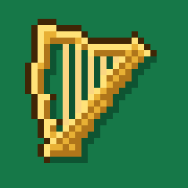
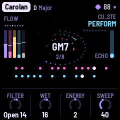

aisling · Irish ambient for the M-VAVE FM-1
v1.0 · by CU_STE · www.stephen8n.com

A generative instrument after the harpers and the west of Ireland. A harp's ostinato runs over a held drone, often in a jig's threes; a second harp drifts against it, an octave down; a flute plays long phrases far back in the reverb, with surf, wind or rain behind. Let it play for hours, or play with it: the white keys give you the flute, always in the piece's scale, and it answers you.



New in v1.0
- A fix for the crackle. The FM-1 now works out its sound one 5.8 ms block ahead, so a chord change or a string strike that takes too long has the next block's time to catch up. Until now any one slow block was a dropout, heard as a click: at their recipes, Skellig, Aran, Samhain and Blasket had them. The sound itself doesn't change.
- 5.8 ms more delay between a key and its sound, and USB MIDI out now leads the audio by that much more.
- Out of testing. Pieces saved by 0.2 to 0.5.1 carry over, and the controls are as in 0.5.1.
- Still new from 0.5 and 0.5.1: the editor, undo, hold SAVE to save, USB audio before MASTER, and newer FM-1s can save and update.
Help, and the files
Listen, and play
AISLING plays itself from the moment it is switched on, and it never ends: each piece opens from the drone, flows, gives the flute its turn, crosses a bridge and starts its long rise again. You are invited in. The white keys play the flute in the piece's scale, so every note fits; play a phrase and it becomes the flute's theme. The black keys are effects while held: Ceo (fog), Macalla (an echo), Fras (a burst of rain), Rise and Close sweep every filter, Transpose lifts the harps, and more. SELECT turns the level of the layer you are looking at; PERFORM (SEL) mutes and solos the layers and pushes Filter, Wet and Energy.
What it plays
- Drone. Organ, strings, a reed drone, glass or a choir whose vowel moves, with the root an octave below; its chords swing slowly between two tonics, as the old tunes do.
- Sequence. The harp: a wire-strung harp's ostinato, often twelve notes in a jig's threes, repeated by the echo, its filter wandering.
- Sequence 2. A second harp, a step shorter and often an octave down, so the two drift apart and meet again.
- Lead. The flute, far back in the reverb, phrasing in calls and answers; or your own melody on the keys.
- Atmosphere. Surf, wind, rain, a turf fire or a curlew, where a piece wants it.
Eight pieces: Skellig, Burren, Aran, Carolan, Blasket, Samhain, Connemara and Tir na nOg, in the old modes and the pipes' keys, each remembering how you left it. Every layer has its sound pages and a Move page, where its filter wanders relative to the knob you set.
AISLING is by CU_STE (www.stephen8n.com). It is a fork of NACHTFAHRT by FartyPants, based on DUB-1 by sbegueria, itself based on AMB-1 by Charles Vestal; its granular cloud follows JIANT's; the platform is Felucca by Leo Kuroshita (Hügelton Instruments). GPL-3.0. M-VAVE and FM-1 are trademarks of their owners. AISLING is not affiliated with M-VAVE, Hügelton Instruments or NACHTFAHRT's author. Its faces are Barlow Semi Condensed and IBM Plex Mono (SIL OFL 1.1).